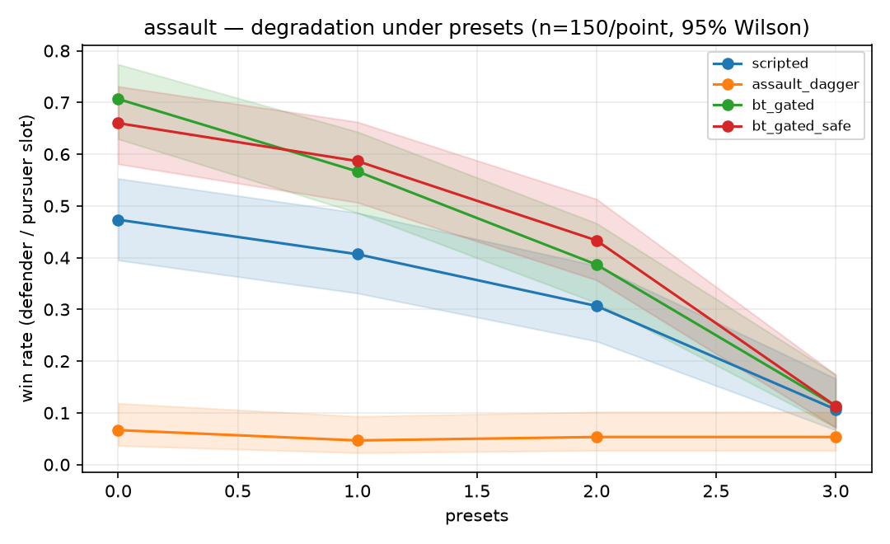
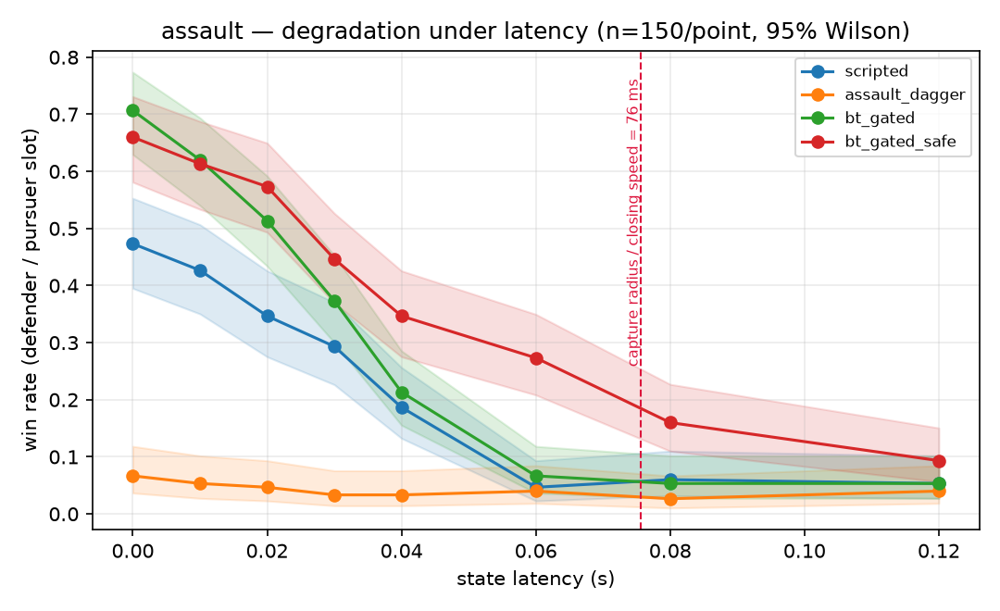
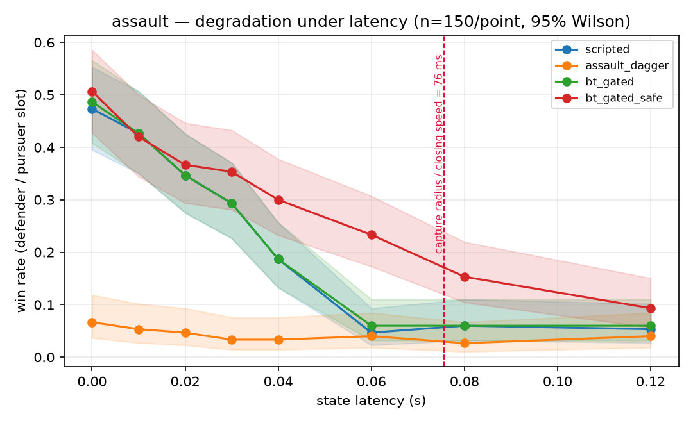

tag episode rendered in MuJoCo: red pursuers under the behaviour-tree gate, blue evaders under the scripted controller.1.Motivation
Autonomy stacks commonly combine a behaviour tree with a learned policy, handing the policy the situations that are hard to script. The choice of which situations to hand over is usually made by intuition. In this project the choice is measured instead. Each controller type and each gate branch is evaluated on identical starting states, and a branch is kept only if it improves the win rate by more than the run-to-run noise.
2.Games
One simulator supports three games. A game specification sets the objective, the airframes, and the spawn geometry, so the controllers, observations, metrics, gate, and safety filter are shared across all three. Missile dynamics are implemented as a transform on the controller's command rather than as a separate physics model: a missile keeps thrust along its velocity vector, has limited lateral authority and a finite burn, and is removed once it slows below stall speed.
| Game | Pursuer side | Evader side | Pursuer side wins if |
|---|---|---|---|
tag | Drones, 5.25 m/s | Drones, 4.75 m/s | Both evaders are tagged before timeout |
assault | Interceptors, 7.5 m/s | Missiles, 11 m/s | The defended asset is never breached |
escort | Interceptors, 7.5 m/s | Missiles, long burn | The convoy reaches its goal |
In the two air-defence games the missiles are faster than the interceptors, so a tail chase cannot succeed and every engagement is a crossing intercept. Captures in those games are checked at every physics substep, because a crossing pass spends only a short chord inside the capture radius.
3.Controllers
-
Scripted: lead-intercept pursuit and guidance laws,
tuned so that scripted pursuers capture in roughly 40 to 50% of
tagepisodes, which leaves room to measure improvement. -
Learned: self-play PPO from scratch reached a 0%
capture rate in
tag. Behaviour cloning of the scripted controller also reached 0%, despite a training MSE of 0.003, which is consistent with covariate shift: the cloned policy drifts into states the expert never visited. DAgger, which relabels the states the policy actually reaches, raised the capture rate to 20%. - Behaviour-tree gate: runs the scripted controller by default and hands control to the learned policy when specific predicates hold. Each game has its own gate profile.
- Safety filter: a runtime filter below both the tree and the policy that enforces a geofence and a speed cap and can override any command.
4.Results
Win rate for the pursuer side over 200 episodes per cell:
| Game | Scripted | Best learned | BT-gated | BT-gated + safety filter |
|---|---|---|---|---|
tag (capture) | 0.46 | 0.20 | 0.19 | 0.46 |
assault (asset held) | 0.54 | 0.04 | 0.72 | 0.72 |
escort (convoy through) | 0.40 | 0.25 | 0.46 | 0.44 |
In tag, the scripted lead-intercept law is well defined in
every state, and gating does not improve on it. In the air-defence games
there are states in which no lead-intercept solution exists; the scripted
defender then parks at a static point. Handing exactly those states to
the learned policy raised the assault win rate from 0.54 to
0.72, although the policy on its own wins only 0.04.
5.Gate ablation
Gate profiles were derived by ablation: predicates are added one at a time on identical seeds, evaluated on two blocks of 150 episodes each.
-
Defender gate (
assault). Adding the single branch "no intercept solution exists" raised the win rate from 0.54 / 0.43 to 0.70 / 0.68 across the two seed blocks. A second branch added nothing and was removed. -
Porting the
tagprofile.tag's gate hands close-quarters situations to the policy. Applied toassault, that branch reduced the win rate from 0.70 to 0.12, lower than not gating at all. - Attacker gate. On the missile side, no learned branch improved the breach rate. It fell from 0.46 / 0.57 with scripted guidance alone to 0.37 / 0.38 with the full gate and 0.33 / 0.35 with the policy alone. Both learned branches were deleted, and the shipped attacker gate routes everything to the scripted controller.
The resulting rule is to gate where the scripted controller is undefined, not where the situation appears complex. A few points of difference at 150 episodes is treated as noise.
6.Two runtimes and parity
Training and research run in Python (MuJoCo Python bindings, SB3, py_trees). The deployment target is a separate C++ runtime: the MuJoCo C API, a BehaviorTree.CPP gate defined in Groot2-editable XML with live Groot2 monitoring, and the policy exported to ONNX and run through ONNX Runtime. Both runtimes load the same generated arena models and link the same MuJoCo library, and the observation encoding, scripted controllers, gate predicates, and safety filter are mirrored line for line.
CI runs both on five fixed starting states and requires matching
checksums. The C++ runner can also load Python's exact start states, so
aggregate metrics can be compared rather than single rollouts. On the
air-defence games the runtimes agree exactly, including per-counter
safety-filter interventions. On tag, long chaotic chases
flip a small number of binary outcomes.
Parity does not catch errors that both runtimes share. The command
clip was originally applied per component rather than by vector norm,
which allowed a diagonal command to produce 1.73× the intended thrust:
a measured top speed of 7.42 m/s against a documented 5.25 m/s.
The scripted controllers only emit unit-norm directions and never
triggered it, but learned policies use the full action range. A
physical-invariant test found it; both runtimes now clip by norm, pinned
by test_drone_thrust_is_isotropic in each.
7.Robustness to link degradation
To estimate how the results transfer to hardware, a link layer wraps any controller with modelled failure modes of a Vicon and radio-link setup: state latency, command latency, packet loss, dropout, position and velocity noise, motor lag, battery sag, and identity swaps between tracked agents. The perfect-link setting is pinned bit-identical to the unwrapped controller by a test. Sweeps use 150 episodes per point with paired seeds, 95% Wilson intervals, and a paired bootstrap for differences.

assault win rate across four link presets (x = 0 to 3: perfect, well-run Vicon lab, busy Vicon lab, degraded field link). n = 150 per point, shaded bands are 95% Wilson intervals.The gate's advantage over the scripted defender is +0.23 with a perfect link, +0.16 under the well-run Vicon preset, +0.08 under the busy preset, and zero under the degraded field preset. On the single-axis latency sweep it stops being significant at 40 ms. Under degradation the safety filter changes from redundant to necessary: at 60 ms of latency, the gated controller with the filter wins 0.21 more often than without it. The gate's advantage holds up under identity swaps (+0.18 at ten times a realistic swap rate) and moderate occlusion (+0.13 at 8% per tick); latency is the axis that removes it.

assault win rate against state latency. The dashed line is the latency budget, capture radius divided by closing speed (76 ms).
The latency at which each curve reaches its floor is predicted without
simulation by a latency budget, capture radius divided by closing speed:
76 ms for assault. At tinywhoop scale the same ratio
gives about 50 ms, which sets a requirement on the motion-capture
and radio link for the hardware stage.
8.Handover debounce (reverted)
As the link degraded, the defender gate handed control to the policy more often: the handover rate rose from 16% to 22%. The hypothesis was that a noisy state estimate was briefly reading as "no intercept solution exists." The proposed fix required the infeasible condition to persist for k ticks before handing over.
The debounce was implemented in both runtimes and swept over
k = 1, 2, 3 on the assault latency
sweep. With a perfect link the gated win rate fell from 0.71 to 0.59 to
0.49 as k increased (paired difference between k = 3
and k = 1: −0.22, significant), and no latency setting
recovered any of the loss. Episode traces showed that genuine infeasible
intervals last 20 to 30 ticks and do not flicker, so the debounce only
delayed the handover against an 11 m/s missile. The change was
reverted, and immediate handover is now pinned by
test_defender_handover_is_immediate in both runtimes. The
loss under latency belongs to the policy, and the safety filter is the
mitigation.

9.Instrumentation
An explorer tool writes a self-contained HTML replay of any episode, showing per tick which gate branch fired, every predicate's value, the commands the scripted controller and the policy each proposed, where the safety filter intervened, and, under a degraded link, the true state against the controller's belief. Failure logs store spawn states, so any episode can be replayed exactly.
10.Status and next steps
All three games run end to end in both runtimes, with the Python and C++ test suites and the parity check passing in CI. The agents are point masses with no attitude dynamics, which is the largest remaining gap to real vehicles. The next step is a 6-DoF underactuated quadrotor model, which will require retraining all policies and recalibrating both gate profiles. The link-degradation layer also needs to be mirrored into C++, and the safety filter needs inter-agent separation before two real airframes share a flight volume. The hardware stage (2 to 4 tinywhoops in a Vicon volume) has not started: motion-capture access is not confirmed and no airframe or radio link has been chosen or ordered.